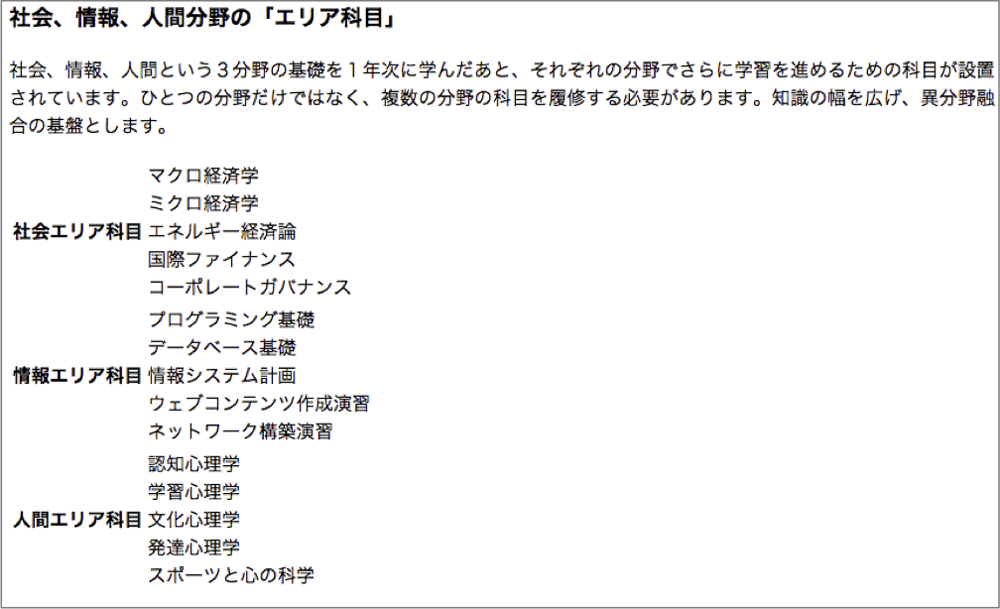

- 
- 見出しの設定
- h1 :「社会情報学部の教育」
- h2 :「学際的遊行領域を学ぶ」「カリキュラムでの科目」
- h3 : それ以外の見出し部分
- 表示例（4）の表の構成
- 表の周りの線や色が無いためわかりづらいので，わかりやすくするために色づけした表を以下に示す
- このように3行2列の表を作成する（実際には色付けは不要である）
version 0.1
本章では，htmlボタンの作り方とJavaScriptの基本を学びます．
source
result
文章にタグを付けて構造を表す
タグは < と > でくくる
<タグ名>ここに文章が入る</タグ名>「開始タグ」と「終了(閉じ)タグ」で囲まれた範囲にタグが示す構造(要素)を適用
終了タグが無いものも存在
タグにはオプション指定できるものもある
<タグ名 要素名1＝”属性A” 要素名2＝”属性B”><meta charset="UTF-8">
<meta name="description" content="HTML練習">
<title>HTMLの練習</title>
<link rel="shortcut icon" href="myfavicon.ico">
<link rel="stylesheet" href="mystyle.css">
<script src="myscript.js"></script><!-- これはコメントです -->| 文字 | 実体参照 | 説明 |
| < | < | 小なり記号 |
| > | > | 大なり記号 |
| & | & | アンド記号 |
| " | " | ダブルクォーテーション |
source
result
見出しは h1（大見出し） から h6（小見出し） まで パラグラフは<p> </p>でくくる 希望位置で改行したい場合には<br>を利用（閉じタグ無し）
<img src="test.jpg" width="180" height="240" alt="サンプル画像">
srcにファイル名を，altには画像の説明を付ける 画像ファイルは，GIF, JPEG, PNGの形式
<p>Googleは<a href="http://google.com">こちら</a>から</p>
<p>別に作ったページは<a href="next.html">ここ</a>から</p>オプション target="_blank" を付けると別ウィンドウ（タブ）で開く
<p>クラウドといえば</p>
<ul>
<li>IaaS</li>
<li>PaaS</li>
<li>SaaS</li>
</ul><p>信号の色の順</p>
<ol>
<li>青</li>
<li>黄</li>
<li>赤</li>
</ol>信号の色の順
UL: Unordered List (順序のないリスト) → 箇条書きリスト OL: Ordered List (順序のあるリスト) → 番号付きリスト LI: List Item (リストの項目)
<p>売り上げ</p>
<table>
<tr><th>支店名</th><th>2009年</th><th>2010年</th><th>2011年</th></tr>
<tr><th>新宿支店</th><td>1000</td><td>1200</td><td>1500</td></tr>
<tr><th>渋谷支店</th><td>800</td><td>950</td><td>1300</td></tr>
<tr><th>横浜支店</th><td>900</td><td>1100</td><td>1200</td></tr>
</table>TR: 行の指定 TH: 見出しの指定 TD: 列（データ）の指定
配布ファイルssi.txtの内容を使い，以下の表示例と同様の出力が可能なssi.htmlを作成せよ


3つのHTMLファイルからなる青山学院大学を説明するWebページを作成せよ


{kind=link}